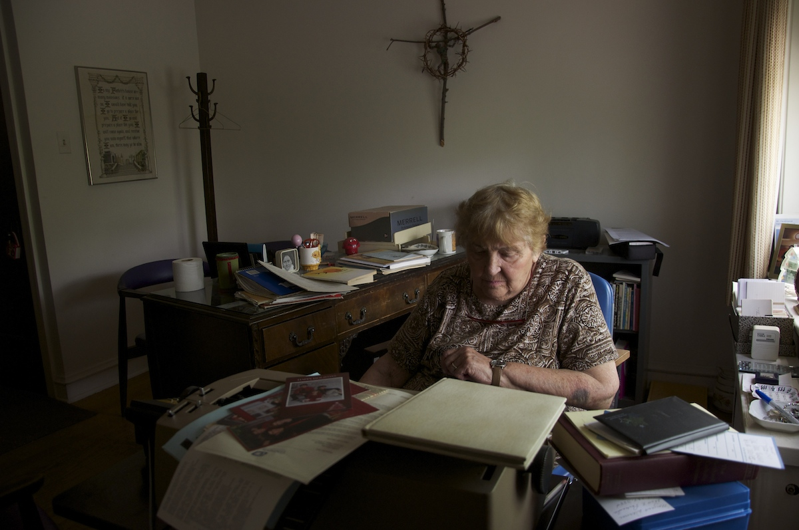
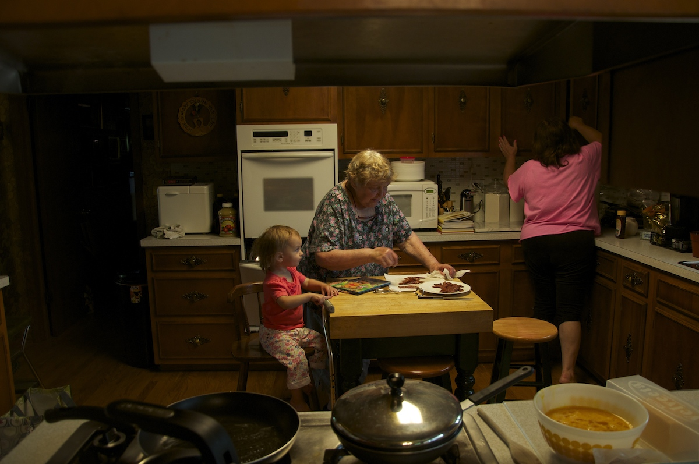
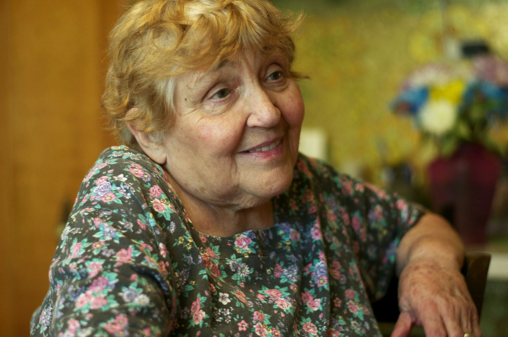
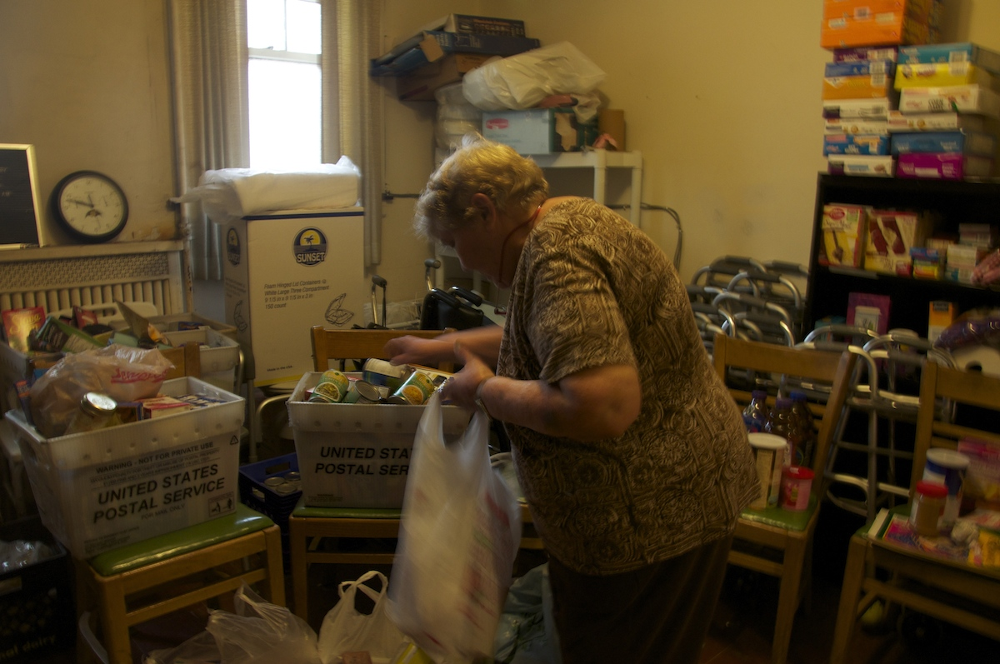
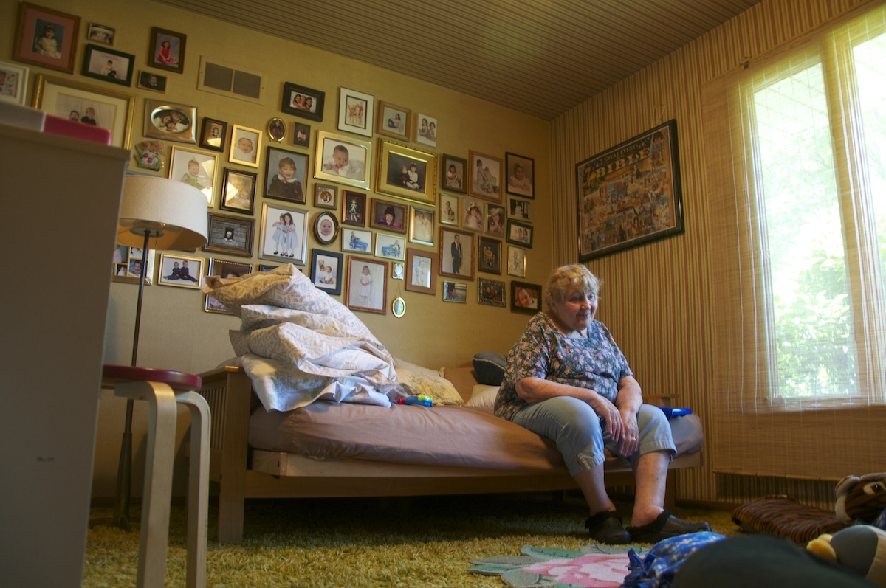
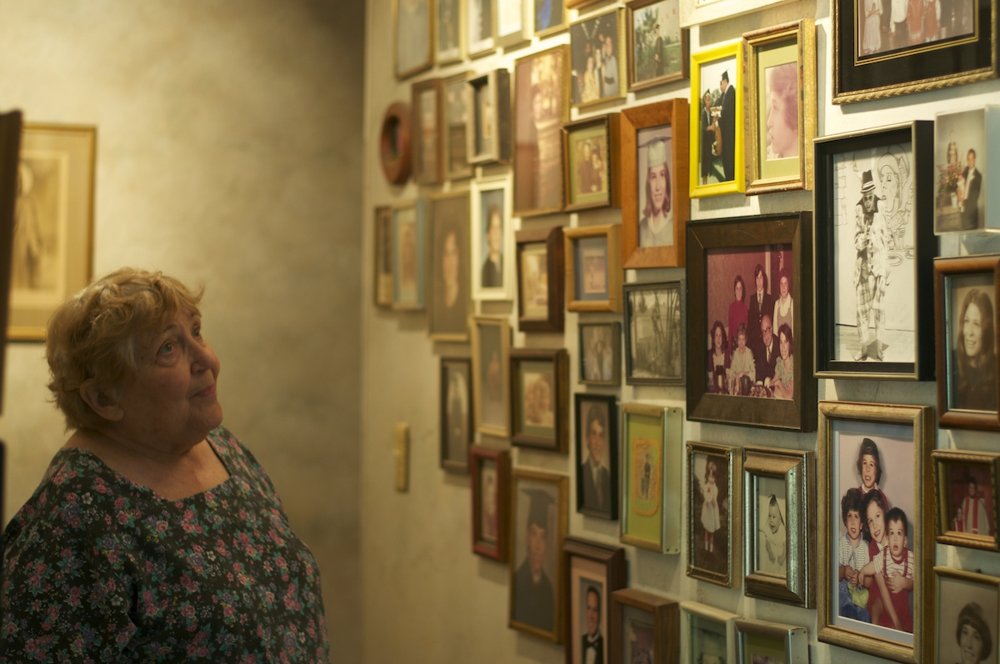

<!DOCTYPE html>
<html lang="en">
  <head>
    <meta charset="utf-8">
    <meta http-equiv="X-UA-Compatible" content="IE=edge">
    <meta name="viewport" content="width=device-width, initial-scale=1.0">
    <meta name="apple-mobile-web-app-capable" content="yes">
    <meta name="apple-touch-fullscreen" content="yes">
    <title>In Lucille's Hands</title>
    <!-- Picture Story Bootstrap CSS-->
    <link rel="stylesheet" href="../css/picturestory-bootstrap.css?v4">
    <!-- Project CSS-->
    <link rel="stylesheet" href="../css/project.css?v11">
    <!-- HTML5 shim, for IE6-8 support of HTML elements-->
    <!--if lt IE 9
    script(src='https://oss.maxcdn.com/libs/html5shiv/3.7.0/html5shiv.js')
    script(src='https://oss.maxcdn.com/libs/respond.js/1.3.0/respond.min.js')
    -->
    <!-- Icon-->
    <link rel="shortcut icon" href="../css/favicon.png">
  </head>
</html>
<body id="top" data-spy="scroll" data-target=".subnav" data-offset="80">
  <!-- NAVBAR-->
  <header class="navigation navbar-fixed-top">
    <div id="navbar-story" role="navigation" class="navbar navbar-default storybar">
      <div class="row"></div>
    </div>
    <div id="navbar-product" role="navigation" class="navbar navbar-default">
      <div class="container-fluid">
        <div class="navbar-header">
          <button type="button" data-toggle="collapse" data-target="#product-navbar-collapse" class="navbar-toggle"><span class="sr-only">Toggle navigation</span><span class="icon-bar"></span><span class="icon-bar"></span><span class="icon-bar"></span></button>
        </div>
        <div id="product-navbar-collapse" class="collapse navbar-collapse navbar-left">
          <ul class="nav navbar-nav">
            <li class="dropdown"><a href="#" data-toggle="dropdown" class="dropdown-toggle navbar-brand-knightlab">Picture Story<b class="caret"></b></a>
              <ul class="dropdown-menu">
                <li>
                  <div class="container about-knightlab">
                    <div class="row">
                      <div class="col-sm-12">
                        <h3>About</h3>
                        <p>Bootstrap templating system for photo layouts.</p>
                        <div class="btn-group"><a href="http://picturestory.knightlab.com" class="btn btn-default"><span style="margin-right:5px;" class="glyphicon glyphicon-home"></span>Home</a><a href="https://github.com/NUKnightLab/Picture-Story/archive/master.zip" class="btn btn-default"><span style="margin-right:5px;" class="glyphicon glyphicon-save"></span>Download the Template</a><a href="https://github.com/NUKnightLab/Picture-Story" class="btn btn-default"><span style="margin-right:5px;" class="icon-github"></span>GitHub</a></div>
                      </div>
                    </div>
                  </div>
                </li>
              </ul>
            </li>
            <li><a id="stories-btn" href="#"><span style="margin-right:5px;" class="icon-stack"></span>More Stories</a></li>
            <li id="navbar-title">Picture Story</li>
          </ul>
        </div>
        <div class="collapse navbar-collapse navbar-right">
          <ul class="nav navbar-nav">
            <li><a href="http://knightlab.northwestern.edu/" target="_blank" title="Knight Lab" class="knightlab-logo"></a></li>
          </ul>
        </div>
      </div>
    </div>
  </header>
  <!-- STORY COVER-->
  <section id="story-cover" class="story-cover">
    <div style="background-image: url('../photos/luhands/Lusteps.jpg');" class="story-cover-image"></div>
    <div class="story-cover-arrow"></div>
    <div class="story-cover-content">
      <h1>In Lucille's Hands</h1>
      <p class="lead">Most seniors by the age of 81 are living in nursing homes, but Lucille Caravette is holding her own.</p>
      <p class="byline">by MARTINE GRANBY</p>
      <p class="byline">Photographs by MARTINE GRANBY</p>
    </div>
  </section>
  <section class="story-cover-caption">
    <div class="caption"> Lucille Caravette relects on life while looking at the wall of her 14 children.</div>
  </section>
  <article class="lazyload">
    <!-- Story Body-->
    <section class="container story-body">
      <div class="row">
          <div class="col-md-2">
         
          </div>
        <div class="col-md-8">
          <p class="lead">In the basement of a convent, Lu gathers canned goods and other nonperishable goods, placing them in plastic shopping bags. Once the bags are prepared, Lu intrepidly makes her way up the small set of stairs to organize each bag on the first floor. By 10 a.m. she is now ready to recieve the 20 or so people that will come to collect much needed food for their families. Lu has been running this food pantry since 1984, in the basement of St. Ferdinand Convent. A few of her children went to St. Ferdinand. At the time Lu was a secretary and an organizer for the church's group Christian Outreach. Through Christian Outreach Lucille was asked to help maintain the influx of donated goods, 30 years later she still runs the pantry by herself. She may have the occansional helping hand from one of the church members.  .</p>
         <figure>
           <figcaption class="credit">Martine Granby</figcaption>
           <figcaption>
             "It not an easy thing to come and ask for food," Lucille said.  
           
           </figcaption>
		  </figure>
		  <p>Every Monday morning Lucille makes the long journey from her home in elk Grove to the convent via bus. Her husband, Peter, died in 1996, "I had time to grieve but then I was busy, my work and my kids helped me through." Members of the church and Lu donate food to the pantry, but she makes sure to inspect each item for experation dates.</p>
            
	    </div>
        <div class="col-md-2">
         
        </div>
      </div>
      <div class="row">
        <div class="col-md-12">
          <!-- Large image in Grid-->
          <figure>
            <figcaption class="credit">Martine Granby</figcaption>
            <figcaption>
              "It's important for people to have a place they know they can go," said Lucille, when talking about the memembers of the community that frequent her food pantry.
  
            </figcaption>
          </figure>
        </div>
      </div>
      <div class="row">
        <div class="col-md-6">
          <p class="byline"></p>
          <p>One of the pantry goers arrives in a red sports car, other members of the church frown upon this, they think she doesn't need the food. "It's not an easy thing to ask for food," Lucille said. She knows that the sports car may be all she has. Lu prepares bag for each specifically for pantry goers. She makes a point to remember their likes and dislikes. "I always try to give them fruit," said Lucille.</p>
          <p>While the pantry keeps her busy on Mondays, as the mother to 14 children and grandmother to 33, she is not alone very often. She jokes with her children, "at least I take a shower once a week." Taking the hour long bus ride to the convent by herself worries her children. But Lucille is not worried and sees little reason why they should be.</p>
          <figure class="figure-pull-right">
            <figcaption class="credit">Martine Granby</figcaption>
            <figcaption>
              Although she lives alone, Lucille is the mother of 14 children and grandmother to 33, she has no shortage of loved ones near by.
              
            </figcaption>
          </figure>
          <p>The ranch style house in Elk Grove, where her and her late husband Peter moved in the 1980s, houses more than memories. Several walls and an entire room are dedicated to walls covered in photos of each family memeber, and their family. Lucille's family tree is well documented. In the hallway, photos of her children, over decades. As well as photos of a recently married Lucille.</p>
          <p>Her work at the pantry, helps Lucille to pass time and stay active but also be of service to others. A devote Catholic, helping those around you is a very important virtue which Lucille does not take lightly.</p>
          <p>
            <blockquote>
              <p>We had the food, we advertised and they came.</p>
              <cite>Lucille Caravette</cite>
            </blockquote>
          </p>
          <p>"They won't let her cook," Lucille says of a Eva, a Polish immigrant who speaks very little English. She often tries to communitcate with Lucille, but to no avail. Eva, lives in a home where her pays very little rent for a bed but is not allowed to cook her own meals. Lucille makes sure to give her things that she can heat up in a microwave or eat cold.</p>
          <p>Today Eva keeps it short, says hello to Lucille and collects her bag of food. Adding it to her already overflowing cart of personal items tucked away in plastic bags. Due to the communication barrier, Lucille is unsure if Eva still has a home.</p>
          <p>Although she is no longer the church's admistrator, Lucille still retains an office on the second floor. If anyone were looking for her on a Monday, they would need to call the office for her. Althoug Lucille is quiet sharp for her age, she has no desire to try to figure out cell phones. "They can call me here, just have to wait until I climb the stairs to call them back," said Lucille.</p>
          <p>A big house and a food pantry to manage, Lucille shows no signs of slowing down. </p>
        </div>
        <div class="col-md-6">

          <figure>
            <figcaption class="credit">Martine Granby</figcaption>
            <figcaption>
              Lucille's catches up with her daughter Mary, who was recently diagonoised with breast cancer.
            </figcaption>
          </figure>
          <div class="row">
            <div class="col-md-6">
              <figure>
                <figcaption class="credit">Maritne Granby</figcaption>
                <figcaption>
                  This room holds many memories for Lucille, at one point a couple of her daughters slept her, now it's a playroom for her granddaughter, Lucille. 
                </figcaption>
              </figure>
            </div>
            <div class="col-md-6">
              <figure>
                <figcaption class="credit">Martine Granby</figcaption>
                <figcaption>
                  Lucille has walls througout the house that are dedicated to the photographs of her children and grandchildren.
                </figcaption>
              </figure>
            </div>
          </div>
          <div class="row">
            <div class="col-md-6">
              <figure>
                <figcaption class="credit">Martine Granby</figcaption>
                <figcaption>
                  Lucille gets around mostly without a walker. She trepidatiously climbs a flight of stairs to get to her office.
                </figcaption>
              </figure>
            </div>
          </div>
        </div>
      </div>
    </section>

  </article>
  <!-- Footer-->
  <footer id="footer">
    <div class="about-knightlab">
      <div class="container-fluid">
        <div class="row">
          <div class="col-lg-2 col-md-1 hidden-sm hidden-xs"></div>
          <div class="col-lg-2 col-md-3 col-sm-4 col-xs-12 knightlab-logo-column"><a href="http://knightlab.northwestern.edu" target="_blank"></a>
            <ul class="social list-inline">
              <li><a href="http://www.twitter.com/knightlab" target="_blank" title="Knight Lab on Twitter"><span class="icon-twitter"></span></a></li>
              <li><a href="https://www.facebook.com/knightlab" target="_blank" title="Knight Lab on Facebook"><span class="icon-facebook"></span></a></li>
              <li><a href="https://github.com/NUKnightLab/" target="_blank" title="Knight Lab on GitHub"><span class="icon-github"></span></a></li>
            </ul>
            <address itemscope="" itemtype="http://data-vocabulary.org/Organization"><span style="display:none;" itemprop="name" title="Knight Lab | Advancing news media innovation through exploration and experimentation." class="address-name">Knight Lab</span><span itemprop="address" itemscope="" itemtype="http://data-vocabulary.org/Address" class="address"><span itemprop="street-address" class="street-address">1845 Sheridan Road<br>Fisk #109 &amp; #111, </span>
                <div class="address-group"><span itemprop="locality">Evanston,</span><span itemprop="region">IL. </span><span itemprop="postal-code">60208</span><br><a href="https://maps.google.com/maps?q=1845+Sheridan+Road+Evanston+IL+6020&amp;amp;hl=en&amp;amp;ll=42.050942,-87.673511&amp;amp;spn=0.003059,0.004898&amp;amp;sll=42.050647,-87.674246&amp;amp;sspn=0.012237,0.019591&amp;amp;gl=us&amp;amp;hnear=1845+Sheridan+Rd,+Evanston,+Cook,+Illinois+60201&amp;amp;t=m&amp;amp;z=18&amp;amp;iwloc=A" target="_blank"><i>+ </i><span>map</span></a><br><span itemprop="country-name" class="address-country">United States</span></div></span><span style="display:none;" itemprop="geo" itemscope="" itemtype="http://www.data-vocabulary.org/Geo/" class="geo">Latitude: <span itemprop="latitude">42.056893</span><br>Longitude: <span itemprop="longitude">-87.676735</span></span><br><span itemprop="tel" class="tel">(847) 467-4971</span><a style="display:none;" href="http://knightlab.northwestern.edu" itemprop="url" class="url">Northwesten University Knight Lab | Advancing media innovation through exploration and experimentation.</a></address>
          </div>
          <div class="col-lg-5 col-md-6 col-sm-8 col-xs-12">
            <div class="knightlab-description">
              <p>The <a title="Northwestern University" href="http://www.northwestern.edu/" target="_blank">Northwestern University</a> Knight Lab is a team of technologists and journalists working at advancing news media innovation through exploration and experimentation.</p>
              <p>A joint initiative of the <a href="http://www.mccormick.northwestern.edu/" target="_blank">Robert R. McCormick School of Engineering and Applied Science</a> and the<a href="http://www.medill.northwestern.edu/" target="_blank"> Medill School of Journalism, Media, Integrated Marketing Communications</a>.</p>
            </div>
          </div>
          <div class="col-lg-1 col-md-1 col-sm-1"></div>
        </div>
        <div class="row">
          <p class="copyright">All images &copy; Copyright 2014 Credited Authors |  &copy; Copyright 2014 Northwestern University</p>
        </div>
      </div>
    </div>
    <!--
    div.knightlab-projects
    
     include footer-storybar
     
    -->
  </footer>
  <!-- JavaScript-->
  <script type="text/javascript" src="http://ajax.googleapis.com/ajax/libs/jquery/1.10.2/jquery.min.js"></script>
  <script type="text/javascript" src="../js/picturestory.js?v10"></script>
</body>